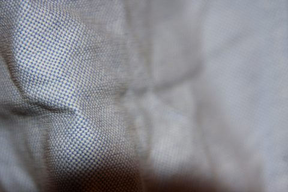

南通开发区 · 色织布工厂
色织图鉴LOOKBOOK · YARN-DYED
像翻阅一本色卡样册：先看见布面，再走进规格与协作。 恒隆专注纱线先染、布面后成的色织路径，服务服装与家纺面料需求。
本季布面方向





Collections
布面速览
点击进入产品与服务，了解规格沟通与协作方式
南通开发区 · 色织布工厂
像翻阅一本色卡样册：先看见布面，再走进规格与协作。 恒隆专注纱线先染、布面后成的色织路径，服务服装与家纺面料需求。
本季布面方向

Collections
点击进入产品与服务，了解规格沟通与协作方式